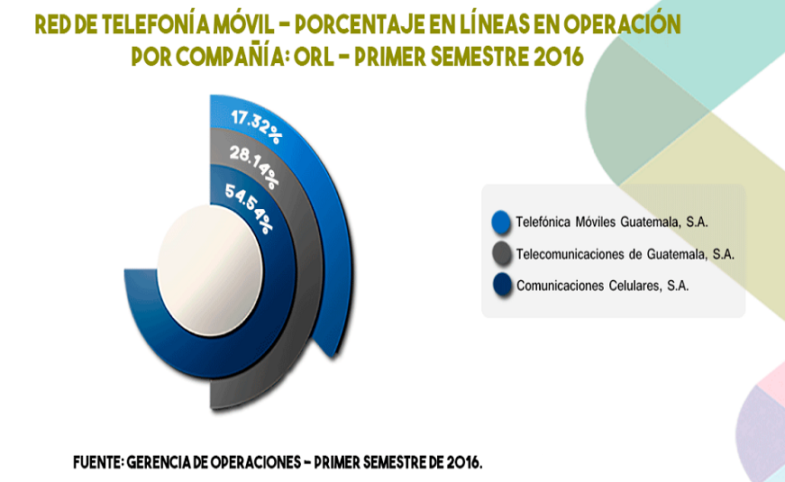
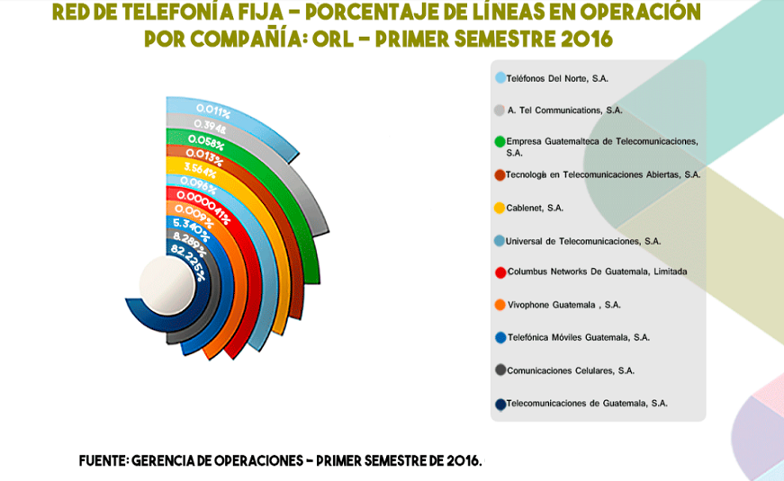
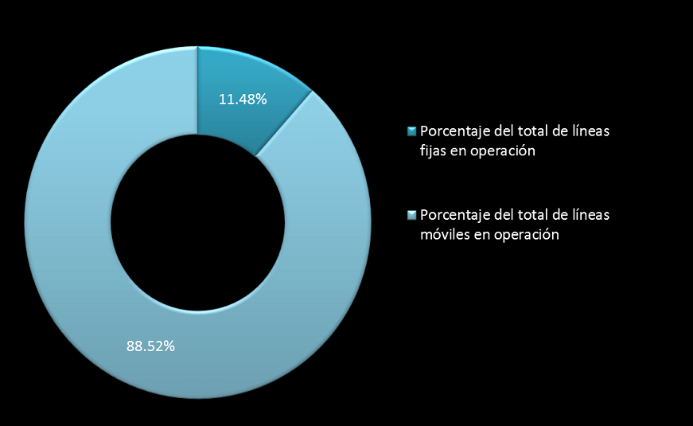
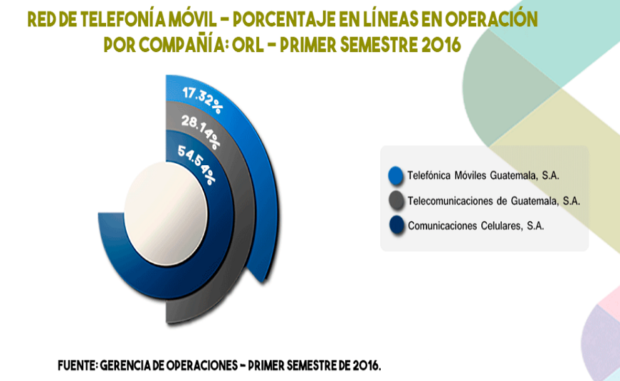
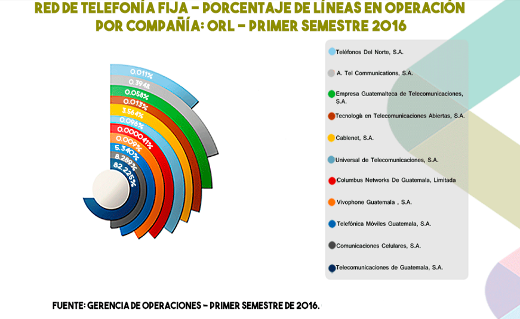
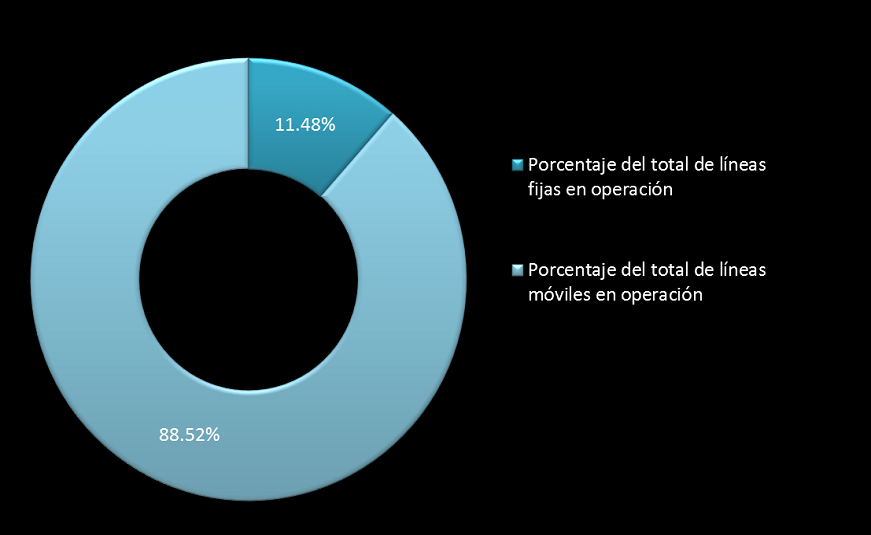

GUATEMALA

STATISTICS
OPERATING MOBILE LINE OPERATING FIXED LINE
 EQUIVALENT PERCENTAGE OF LINES IN OPERATION
REGULATORY ENTITY


GUATEMALA
OPERATING MOBILE LINE OPERATING FIXED LINE
 EQUIVALENT PERCENTAGE OF LINES IN OPERATION
